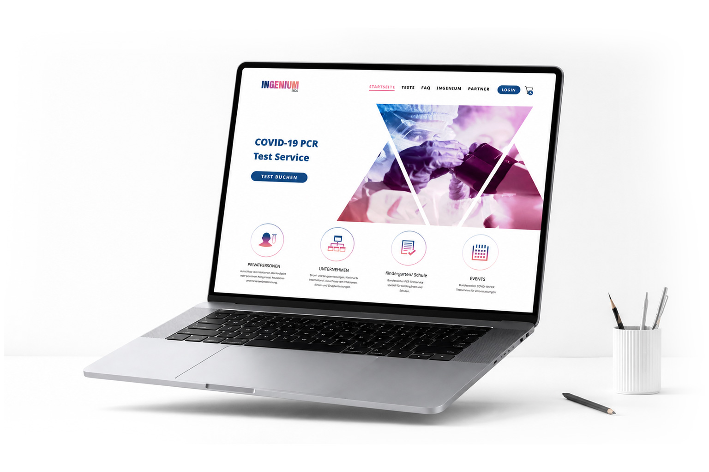
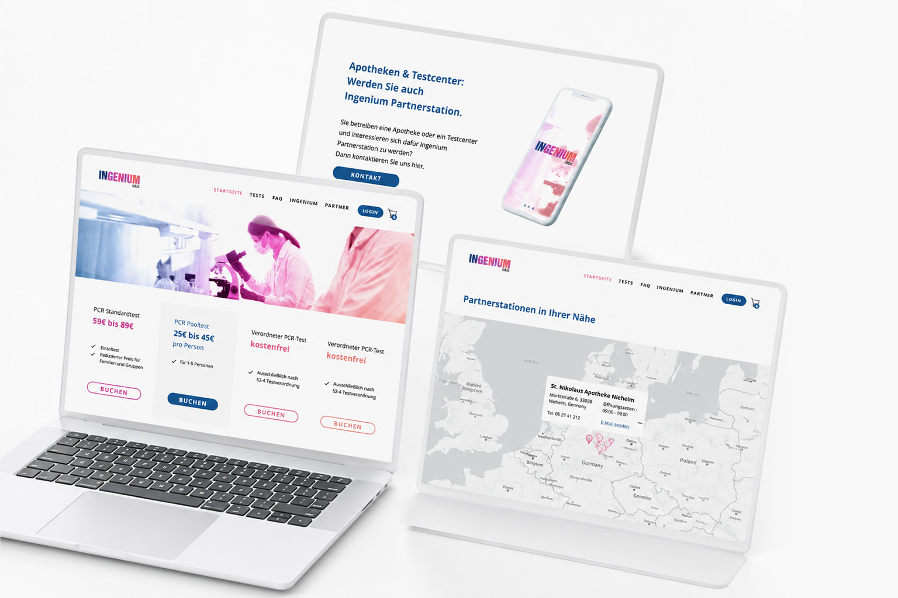
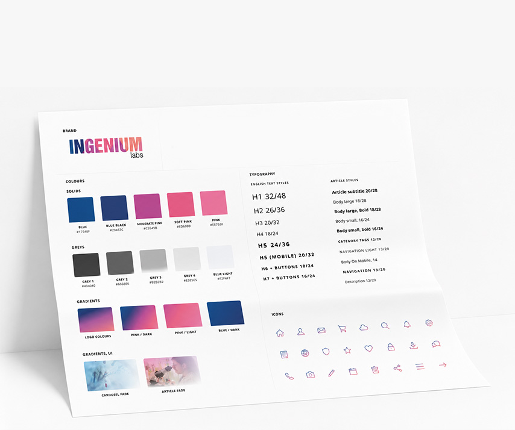

Website project · 2022
Ingenium Labs
The project focused on creating a modern, trustworthy digital experience that makes booking tests fast and accessible for both individuals and organizations.
UX/UI Designer
Website
UX Research · Wireframing · UI Design · Design System · Responsive Design · Prototyping
Figma · Wordpress · Illustrator · Photoshop

Design Process
The project followed a structured design process:
- User Flow
- Low-Fidelity Wireframes
- High-Fidelity UI
- Design System
- Interactive Prototype

Design System
A scalable design system was built to ensure consistency across the entire product. It includes typography, colors, icons, reusable components, and layout guidelines for faster development and future expansion.

Wireframes
Low-fidelity wireframes were used to define the user journey and validate layouts before moving into the visual design phase.

Outcome
The final product delivers a clear, responsive, and user-friendly healthcare platform that simplifies PCR test booking while providing a consistent experience across all screens.